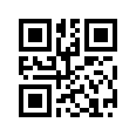

QRCheck
QRCheck

QRCheck : Vérification des Cachets Electroniques TN CEV 2D-Doc
Cette application a été développée par Dr. Nizar Ben Ltaief, médecin à plein temps au Groupement de Médecine du Travail du Gouvernorat de Sousse.
Cette application correspond à un refactoring de l'application QR-Check développée pour la plateforme Android par l'Agence Nationale de Certification Electronique TUNTRUST.
Contrairement à cette dernière, QRCheck est une application Progressive Web App pouvant être utilisée en ligne ou installée et utilisée en hors ligne sur les téléphones et tablettes Android et iOs ainsi que sur les ordinateurs PC Windows, Linux et Mac OS. QRCheck permet aussi de basculer entre les différentes caméras pouvant être connectées au système utilisé.
Le but de cette application est de faciliter la vérification de la validité des passes vaccinaux et des certificats de vaccination.
Cette application n'est qu'un refactoring de l'application QR-Check développée pour la plateforme Android par l'Agence Nationale de Certification Electronique TUNTRUST : je ne détiens aucun droit sur son code source; les droits originaux des différentes librairies et codes utilisés reviennent à leurs auteurs originaux.
Code source: https://github.com/drx-tn/qrcheck
Contact : https://drx.tn/contact